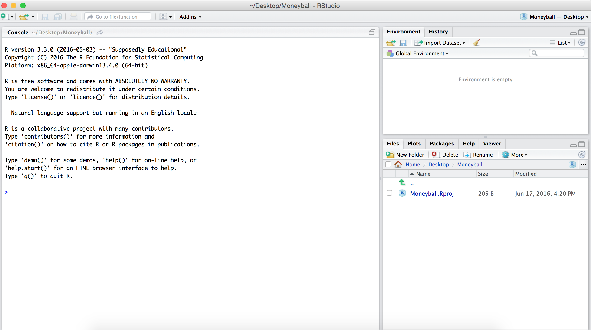

Problem Set 0
Please try to work through this first problem set. You will have time on Day 1 to discuss any questions you have with the TAs.
Basic Usage
When you open RStudio for the first time, it should open up a new window that looks something like this: 
The RStudio window is divided into three panes. For now, we will
focus only on the big pane on the left, the Console
pane. At the top of the Console pane, there is a bit of
introductory text that shows the version of R that we are using and the
license. Below that, you should see a >, which is the
R prompt. As we mentioned earlier, at its core, R uses a
command-line interface which means that you interact with the software
by typing commands and hitting Enter or
Return.
The simplest thing we can do is to use R as a calculator. For
instance, we can type 2 + 3 * (6 - 4)^5 after the
> and then hit Enter. Below, is a code-chunk
showing the output of typing 2 + 3 * (6 - 4)^5 after the
> and then hitting
We see that R returns the value of the expression \(2 + 3 \times (6 - 4)^5\) immediately underneath and the answer is preceded by a [1]. For now, don’t worry about this ``[1]’’; we’ll return to it later.
## [1] 98Like any scientific calculator, R comes with a number of built-in functions
## [1] 2## [1] 2.302585## [1] -1Assignment
When you enter expressions like those above, R evaluates them, prints
them, and then immediately discards them. Oftentimes, however, you’ll
want to store a value as a named variable and use it in subsequent
calculations. For instance, let’s say that we want to store the value of
\(2 + 3\times (6 - 4)^5\) as \(x\) and then compute the following: \(1/x, x + 1,\) and \(\sqrt{x}.\) To assign the value of
the expression 2 + 3*(6 - 4)^5 to the variable
x we use the assignment operator
<-. The assignment operator evaluates the expression
immediately to the right of it and stores that value in an object whose
name is whatever text came to the left of the operator.
Now when we execute this expression, R does not auotmatically print anything like it did in an earlier example. However, if you look closely at the Environment pane (top right-hand side of the RStudio window), you’ll see that it now lists x and its value 98.
This pane will show every variable that we have defined. As we start creating more and more variables, this list will be really helpful to keep track of what we’ve defined. Now that we have created the variable x, we can use the symbol ``x’’ in more expressions. For example, we can compute \(1/x, x + 1,\) and \(\sqrt{x}\) as follows:
## [1] 98## [1] 0.01020408## [1] 99## [1] 9.899495## [1] 3.14## [1] 3.1416## [1] 9.8995In the last three examples, we used the function
round(), which takes 2 arguments (entered inside the
parantheses). The first argument is the number that we want to round and
the second argument (following the comma) is the number of digits to
which we want to round the first argument. This is our first example of
a multi-argument function and we’ll be seeing a lot more of them later
on. In the last example above, we didn’t give round an
explicit number to round. Instead, R first evaluated
sqrt(x) and then rounded it. R follows the conventional
order of operations, in that it evaluates the inner-most expression
first and then works its way out.
If we try to evaluate an expression using the name of a variable that we haven’t defined yet, R will throw an error. For instance, in the code below, if we try to add 5 to a previously undeclared variable, we get an error.
## [1] 5.596900 5.059829 5.047764 5.060890 5.521040 5.078748 5.962378 5.286117 5.110335 5.000812
## [11] 5.149910 5.008091 5.188819 5.717184 5.172531 5.455073 5.182802 5.217490 5.392570 5.286812
## [21] 5.134524 5.155720 5.464999 5.846415 5.316295 5.385886 5.002641 5.687766 5.439158 5.825299
## [31] 5.007712 5.220549 5.152612 5.000214 5.406799 5.269715 5.357011 5.232691 5.968848 5.377862
## [41] 5.011378 5.085739 5.141640 5.059360 5.115913 5.000016 5.125450 5.000901 5.262290 5.281876Exercises
- Save the value of
8/5 + 3^3as a new variabley. - Save the values of
y/xas a new variablez. - Compute the square root of
x,yandz. - Round these values to 3 decimal points.
If you’ve finished these exercises and would like to keep playing with R, you can check out the first day’s R Lecture.
Discussion Questions
Prior to starting any type of statistical analysis, it is important for statisticians, analysts, etc., to learn how to propose research questions and develop unbiased strategies for answering them. Before getting into the real content of these lectures, we’d like you to think about the following questions:
In the 2016-17 NBA regular season, Stephen Curry’s field goal percentage was 46.8%. DeAndre Jordan’s field goal percentage was 71.7%. One could argue, then, that Jordan is a much better shooter than Curry; after all, he makes a much higher percentage of shots. What is wrong with this argument (if anything)?
The racehorse Secretariat won the Belmont Stakes by a total of 31 lengths. Ted Williams hit .406 in the 1941 baseball season. Which do you think was a more unusual outcome? How can we begin to compare the two events?